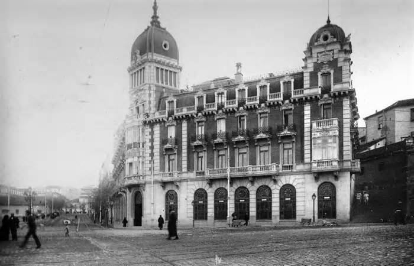

La Real Compañía Asturiana de Minas renace en Madrid transformada en un espacio cultural

Tras una rehabilitación de 28 meses y una inversión cercana a los 30 millones de euros, el histórico edificio de Plaza de España 8 abre sus puertas al público bajo la gestión de la Fundación Mutua Mad ...
Tras una rehabilitación de 28 meses y una inversión cercana a los 30 millones de euros, el histórico edificio de Plaza de España 8 abre sus puertas al público bajo la gestión de la Fundación Mutua Mad ...
Noticia publicada por El Confidencial. Consulta el artículo original en El Confidencial para más información.